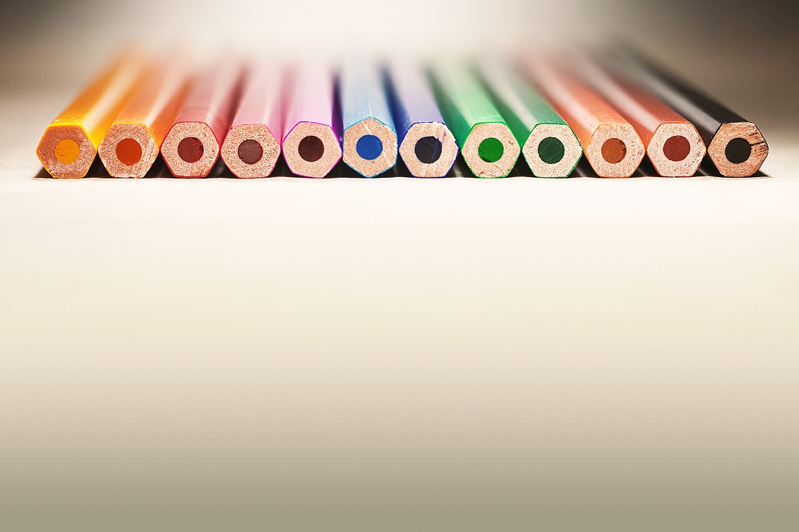
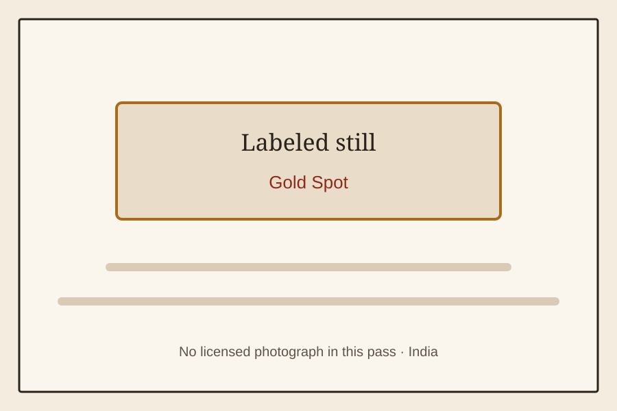
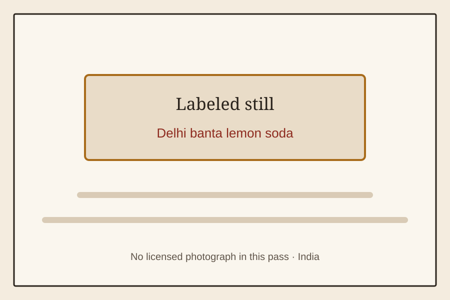

India
A browse shelf of Indian school, snack, festival, and television memories.
Full shelf
 India · Shaktimaan towel capeShaktimaan towel capecatalog cardLabeled still for Shaktimaan towel cape; no licensed photo was available.
India · Shaktimaan towel capeShaktimaan towel capecatalog cardLabeled still for Shaktimaan towel cape; no licensed photo was available. India · Chandrakanta Sunday slotChandrakanta Sunday slotcatalog cardLabeled still for Chandrakanta Sunday slot; no licensed photo was available.
India · Chandrakanta Sunday slotChandrakanta Sunday slotcatalog cardLabeled still for Chandrakanta Sunday slot; no licensed photo was available. India · Hindi DuckTales and TaleSpin Sunday slotHindi DuckTales and TaleSpin Sunday slotcatalog cardLabeled still for Hindi DuckTales and TaleSpin Sunday slot; no licensed photo was available.
India · Hindi DuckTales and TaleSpin Sunday slotHindi DuckTales and TaleSpin Sunday slotcatalog cardLabeled still for Hindi DuckTales and TaleSpin Sunday slot; no licensed photo was available. India · Parle-G biscuitParle-G biscuitcatalog cardLicensed photo of Parle-G biscuit.
India · Parle-G biscuitParle-G biscuitcatalog cardLicensed photo of Parle-G biscuit. India · Frooti tetra packsFrooti tetra packscatalog cardLicensed photo of Frooti tetra packs.
India · Frooti tetra packsFrooti tetra packscatalog cardLicensed photo of Frooti tetra packs. India · Rasna glassesRasna glassescatalog cardLabeled still for Rasna glasses; no licensed photo was available.
India · Rasna glassesRasna glassescatalog cardLabeled still for Rasna glasses; no licensed photo was available. India · Uncle ChippsUncle Chippscatalog cardLabeled still for Uncle Chipps; no licensed photo was available.
India · Uncle ChippsUncle Chippscatalog cardLabeled still for Uncle Chipps; no licensed photo was available. India · Camlin geometry boxCamlin geometry boxcatalog cardA generic geometry box photograph; the file does not identify Camlin.
India · Camlin geometry boxCamlin geometry boxcatalog cardA generic geometry box photograph; the file does not identify Camlin.
India · Natraj pencilNatraj pencilcatalog cardA generic wooden pencil photograph; the file does not identify Natraj. India · Steel tiffinSteel tiffincatalog cardStacked steel tiffin boxes photographed in Chennai, India.
India · Steel tiffinSteel tiffincatalog cardStacked steel tiffin boxes photographed in Chennai, India. India · Chalked white PT shoesChalked white PT shoescatalog cardGeneric white canvas trainers; the file is not a PT-shoe photo.
India · Chalked white PT shoesChalked white PT shoescatalog cardGeneric white canvas trainers; the file is not a PT-shoe photo. India · Phantom chalk candyPhantom chalk candycatalog cardLabeled still for Phantom chalk candy; no licensed photo was available.
India · Phantom chalk candyPhantom chalk candycatalog cardLabeled still for Phantom chalk candy; no licensed photo was available. India · Kismi elaichi toffeeKismi elaichi toffeecatalog cardLabeled still for Kismi elaichi toffee; no licensed photo was available.
India · Kismi elaichi toffeeKismi elaichi toffeecatalog cardLabeled still for Kismi elaichi toffee; no licensed photo was available.
India · Gold SpotGold Spotcatalog cardLabeled still for Gold Spot; no licensed photo was available.
India · Delhi banta lemon sodaDelhi banta lemon sodacatalog cardLabeled still for Delhi banta lemon soda; no licensed photo was available. India · Binaca toothpaste animal charmBinaca toothpaste animal charmcatalog cardLabeled still for Binaca toothpaste animal charm; no licensed photo was available.
India · Binaca toothpaste animal charmBinaca toothpaste animal charmcatalog cardLabeled still for Binaca toothpaste animal charm; no licensed photo was available. India · Unlit Diwali chakriUnlit Diwali chakricatalog cardLabeled still for Unlit Diwali chakri; no licensed photo was available.
India · Unlit Diwali chakriUnlit Diwali chakricatalog cardLabeled still for Unlit Diwali chakri; no licensed photo was available. India · Unlit Diwali anarUnlit Diwali anarcatalog cardLabeled still for Unlit Diwali anar; no licensed photo was available.
India · Unlit Diwali anarUnlit Diwali anarcatalog cardLabeled still for Unlit Diwali anar; no licensed photo was available. India · Unlit Diwali phuljhariUnlit Diwali phuljharicatalog cardLabeled still for Unlit Diwali phuljhari; no licensed photo was available.
India · Unlit Diwali phuljhariUnlit Diwali phuljharicatalog cardLabeled still for Unlit Diwali phuljhari; no licensed photo was available. India · Holi pichkariHoli pichkaricatalog cardLicensed photo of Holi pichkari.
India · Holi pichkariHoli pichkaricatalog cardLicensed photo of Holi pichkari. India · GulalGulalcatalog cardGulal powder in an Indian festival photograph; the object is shown in context.
India · GulalGulalcatalog cardGulal powder in an Indian festival photograph; the object is shown in context. India · Makar Sankranti kiteMakar Sankranti kitecatalog cardKites flying on Sankranti festival day in India.
India · Makar Sankranti kiteMakar Sankranti kitecatalog cardKites flying on Sankranti festival day in India. India · Posham Pa hand-gate gamePosham Pa hand-gate gamecatalog cardLabeled still for Posham Pa hand-gate game; no licensed photo was available.
India · Posham Pa hand-gate gamePosham Pa hand-gate gamecatalog cardLabeled still for Posham Pa hand-gate game; no licensed photo was available. India · Cyber cafeCyber cafecatalog cardLabeled still for Cyber cafe; no licensed photo was available.
India · Cyber cafeCyber cafecatalog cardLabeled still for Cyber cafe; no licensed photo was available.Licensed photographs are credited in CREDITS.md. Labeled stills mark items without a licensed photograph in this pass.